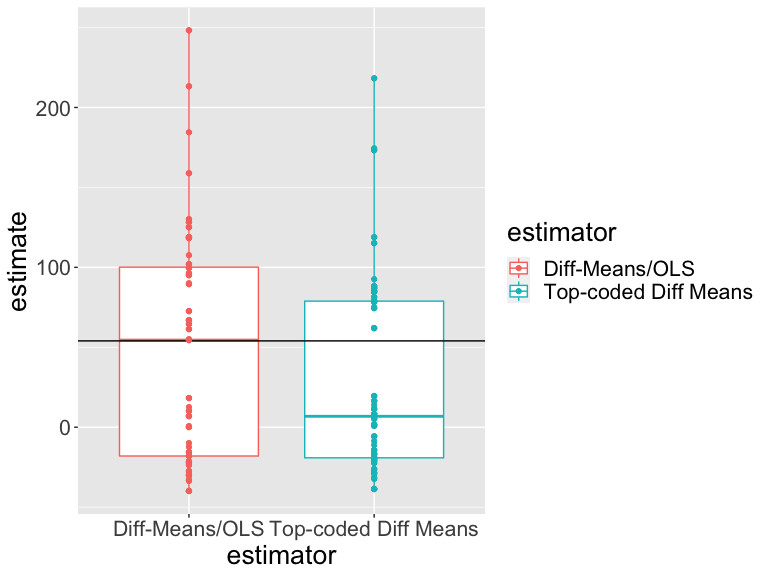
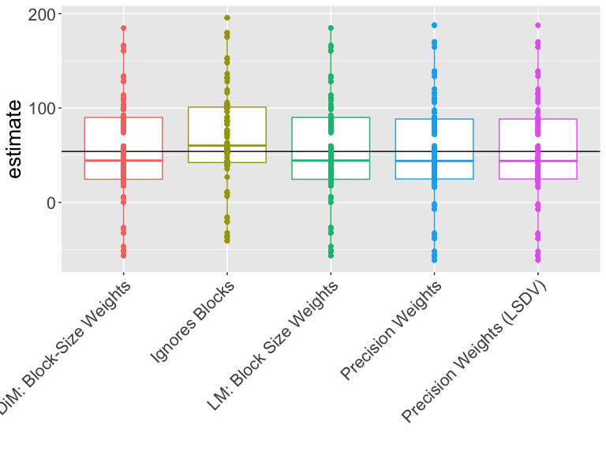
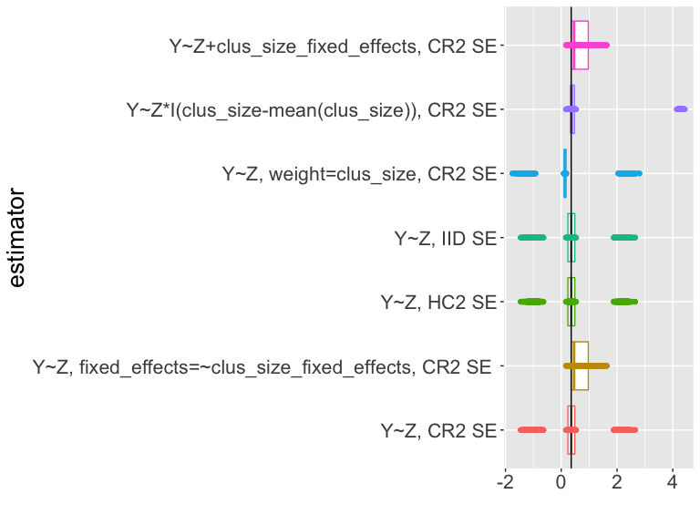
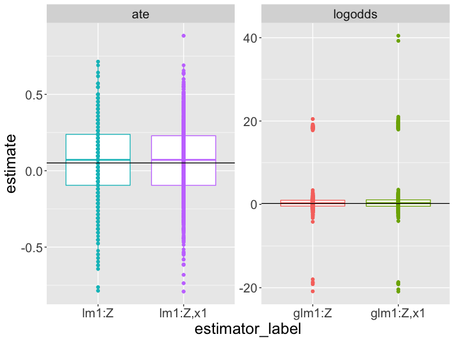

A causal effect, \(\tau_i\), is a comparison of unobserved potential outcomes for each unit \(i\): examples \(\tau_{i} = Y_{i}(T_{i}=1) - Y_{i}(T_{i}=0)\) or \(\tau_{i} = \frac{Y_{i}(T_{i}=1)}{ Y_{i}(T_{i}=0)}\).
To learn about \(\tau_{i}\), we can treat \(\tau_{i}\) as an estimand or target quantity to be estimated (discussed here) or as a target quantity to be hypothesized about (session on hypothesis testing).
Many focus on the average treatment effect (ATE), \(\bar{\tau}=\sum_{i=1}^n\tau_{i}\), in part, because it allows for easy estimation.
They key to estimation for causal inference is to choose an estimand that helps you learn about your theoretical or policy question. So, one could use the ATE but other common estimands include the ITT, LATE/CACE, ATT, or ATE for some subgroup (or even a different of causal effects between groups).
An estimator is a recipe for calculating a guess about the value of an estimand. For example, the difference of observed means for \(m\) treated units is one estimator of \(\bar{\tau}\): \(\hat{\bar{\tau}} = \frac{\sum_{i=1}^n (T_i Y_i)}{m} - \frac{\sum_{i=1}^n ( ( 1 - T_i)Y_i)}{(n-m)}\).
The standard error of an estimator in a randomized experiment summarizes how the estimates would vary if the experiment were repeated.
We use the standard error to produce confidence intervals and p-values: so that we can begin with an estimator and end at a hypothesis test.
Different randomizations will produce different values of the same estimator targeting the same estimand. A standard error summarizes this variability in an estimator.
A \(100(1-\alpha)\)% confidence interval is a collection of hypotheses that cannot be rejected at the \(\alpha\) level. We tend to report confidence intervals containing hypotheses about values of our estimand and use our estimator as a test statistic.
Estimators should:
avoid systematic error in their guessing of the estimand (be unbiased);
vary little in their guesses from experiment to experiment (be precise or efficient); and
perhaps ideally converge to the estimand as they use more and more information (be consistent).
Analyze as you randomize in the context of estimation means that (1) our standard errors should measure variability from randomization and (2) our estimators should target estimands defined in terms of potential outcomes.
We do not control for background covariates when we analyze data from randomized experiments. But covariates can make our estimation more precise. This is called covariance adjustment (or covariate adjustment). Covariance adjustment in randomized experiments differs from controlling for in observational studies.
Review: Causal inference refers to a comparison of unobserved, fixed, potential outcomes.
For example:
Treatment assignment, \(T_i\), has a causal effect on unit \(i\), that we call \(\tau_i\), if \(Y_{i}(T_{i}=1) - Y_{i}(T_{i}=0) \ne 0\) or \(Y_{i}(T_{i}=1) \ne Y_{i}(T_{i}=0)\).
Recall: we can test hypotheses about the pair of potential outcomes \(\{ Y_{i}(T_{i}=1), Y_{i}(T_{i}=0) \}\).
We can define estimands in terms of \(\{ Y_{i}(T_{i}=1), Y_{i}(T_{i}=0) \}\) or \(\tau_i\), develop estimators for those estimands, and then calculate values and standard errors for those estimators.
Say we are interested in the ATE, or \(\bar{\tau}=\sum_{i=1}^n \tau_{i}\). What is a good estimator?
Two candidates:
The difference of means: \(\hat{\bar{\tau}} = \frac{\sum_{i=1}^n (T_i Y_i)}{m} - \frac{\sum_{i=1}^n ( ( 1 - T_i) Y_i)}{n-m}\).
A difference of means after top-coding the highest \(Y_i\) observation (a kind of “winsorized” mean to prevent extreme values from exerting too much influence over our estimator — to increase precision).
How would we know which estimator is best for our particular research design?
Let’s simulate!
Notice that we need to know the potential outcomes and the treatment assignment in order to learn whether our proposed estimator does a good job.
The true ATE is 54In reality, we would observe only one of the potential outcomes.
Note that each unit has its own treatment effect.
The table in the previous slide was generated in R with:
# We have ten units
N <- 10
# y0 is potential outcome to control
y0 <- c(0, 0, 0, 1, 1, 3, 4, 5, 190, 200)
# Each unit has its own treatment effect
tau <- c(10, 30, 200, 90, 10, 20, 30, 40, 90, 20)
# y1 is potential outcome to treatment
y1 <- y0 + tau
# Two blocks, a and b
block <- c("a", "a", "a", "a", "a", "a", "b", "b", "b", "b")
# Z is treatment assignment (Z instead of T in the code)
Z <- c(0, 0, 0, 0, 1, 1, 0, 0, 1, 1)
# Y is observed outcomes
Y <- Z * y1 + (1 - Z) * y0
# The data
dat <- data.frame(Z = Z, y0 = y0, y1 = y1, tau = tau, b = block, Y = Y)
set.seed(12345)DeclareDesign represents research designs in a few steps shown below:
# take just the potential outcomes under treatment and control from our
# fake data
small_dat <- dat[, c("y0", "y1")]
# DeclareDesign first asks you to declare your population
pop <- declare_population(small_dat)
# 5 units assigned to treatment; default is simple random assignment with
# probability 0.5
trt_assign <- declare_assignment(m = 5)
# observed Y is y1 if Z=1 and y0 if Z=0
pot_out <- declare_potential_outcomes(Y ~ Z * y1 + (1 - Z) * y0)
# specify outcome and assignment variables
reveal <- declare_reveal(Y, Z)
# the basic research design object includes these four objects
base_design <- pop + trt_assign + pot_out + revealDeclareDesign renames y0 and y1 by default to Y_Z_0 and Y_Z_1:
## A simulation is one random assignment of treatment
sim_dat1 <- draw_data(base_design)
## Simulated data (just the first 6 lines)
head(sim_dat1) y0 y1 Z Z_cond_prob Y_Z_0 Y_Z_1 Y
1 0 10 1 0.5 0 10 10
2 0 30 1 0.5 0 30 30
3 0 200 0 0.5 0 200 0
4 1 91 1 0.5 1 91 91
5 1 11 0 0.5 1 11 1
6 3 23 1 0.5 3 23 23No output here. Just define functions and estimators and one estimand.
## The second estimator is top-coded difference-in-means
diff_means_topcoded_fn <- function(data) {
data$rankY <- rank(data$Y)
## Code the maximum value of Y as the second to maximum value of Y
data$newY <- with(
data,
ifelse(rankY == max(rankY), Y[rankY == (max(rankY) - 1)], Y)
)
obj <- lm_robust(newY ~ Z, data = data, se_type = "classical")
res <- tidy(obj) %>% filter(term == "Z")
return(res)
}
diff_means_topcoded <- declare_estimator(
handler = label_estimator(diff_means_topcoded_fn),
estimand = estimandATE, label = "Top-coded Diff Means"
)Here we show how the DD estimators work using our simulated data.
estimand_label estimand
1 ATE 54## Demonstrate that the estimators estimate
## Estimator 1 (difference in means)
diff_means(sim_dat1)[-c(1, 2, 10, 11)] estimate std.error statistic p.value conf.low conf.high df
1 -39.2 49.41 -0.7934 0.4505 -153.1 74.74 8 estimate std.error statistic p.value conf.low conf.high df
1 -37.2 48.21 -0.7716 0.4625 -148.4 73.98 8Recall the true ATE:
[1] 54In one experiment (one simulation of the data) here are the simple estimates:
## Two ways to calculate the difference of means estimator
est_diff_means_1 <- with(sim_dat1, mean(Y[Z == 1]) - mean(Y[Z == 0]))
est_diff_means_2 <- coef(lm_robust(Y ~ Z,
data = sim_dat1,
se = "classical"
))[["Z"]]
c(est_diff_means_1, est_diff_means_2)[1] -39.2 -39.2In one experiment (one simulation of the data) here are the estimates after top-coding:
## Two ways to calculate the topcoded difference of means estimator
sim_dat1$rankY <- rank(sim_dat1$Y)
sim_dat1$Y_tc <- with(sim_dat1, ifelse(rankY == max(rankY),
Y[rankY == (max(rankY) - 1)], Y
))
est_topcoded_1 <- with(sim_dat1, mean(Y_tc[Z == 1]) - mean(Y_tc[Z == 0]))
est_topcoded_2 <- coef(lm_robust(Y_tc ~ Z,
data = sim_dat1,
se = "classical"
))[["Z"]]
c(est_topcoded_1, est_topcoded_2)[1] -37.2 -37.2Now calculate your estimate with the same estimators using a different randomization. Notice that the answers differ. The estimators are estimating the same estimand but now they have a different randomization to work with.
# do another random assignment of the treatment in DeclareDesign
# this produces a new simulated dataset with a different random assignment
sim_dat2 <- draw_data(base_design)
# the first estimator (difference in means)
coef(lm_robust(Y ~ Z, data = sim_dat2, se = "classical"))[["Z"]][1] 76.8# the second estimator (top-coded difference in means)
sim_dat2$rankY <- rank(sim_dat2$Y)
sim_dat2$Y_tc <- with(sim_dat2, ifelse(rankY == max(rankY),
Y[rankY == (max(rankY) - 1)], Y
))
coef(lm_robust(Y_tc ~ Z, data = sim_dat2, se = "classical"))[["Z"]][1] 36.25Our estimates vary across randomizations. Do our two estimators vary in the same ways?
## Combine into one DeclareDesign design object
## This has the base design, estimand, then our two estimators
design_plus_ests <- base_design + estimandATE + diff_means +
diff_means_topcoded
## Run 100 simulations (reassignments of treatment) and
## apply the two estimators (diff_means and diff_means_topcoded)
diagnosis1 <- diagnose_design(design_plus_ests,
bootstrap_sims = 0, sims = 100
)
sims1 <- get_simulations(diagnosis1)
head(sims1[, -c(1:6)]) estimate std.error statistic p.value conf.low conf.high df outcome
1 -36.8 49.35 -0.7457 0.4772 -150.60 77.00 8 Y
2 -34.8 48.15 -0.7228 0.4904 -145.82 76.22 8 newY
3 50.0 63.01 0.7935 0.4504 -95.31 195.31 8 Y
4 34.0 52.13 0.6522 0.5326 -86.22 154.22 8 newY
5 -6.8 58.35 -0.1165 0.9101 -141.35 127.75 8 Y
6 -8.5 49.89 -0.1704 0.8703 -130.57 113.57 6 newYOur estimates vary across randomizations. Do our two estimators vary in the same ways? How should we interpret this plot?

One way to choose among estimators is to choose the one that is close to the truth whenever we use it — regardless of the specific randomization.
An “unbiased” estimator is one for which average of the estimates across repeated designs is the same as the truth (or \(E_R(\hat{\bar{\tau}})=\bar{\tau}\)). An unbiased estimator has “no systematic error” but doesn’t guarantee closeness to the truth.
Another measure of closeness is root mean squared error (RMSE) which records squared distances between the truth and the individual estimates.
Which estimator is better? (One is closer to the truth on average (RMSE) and is more precise. The other has no systematic error — is unbiased.)
| Estimator Label | Bias | RMSE | SD Estimate | Mean Se | Power |
|---|---|---|---|---|---|
| Diff-Means/OLS | -7.68 | 54.87 | 54.60 | 57.46 | 0.10 |
| Top-coded Diff Means | -18.77 | 53.06 | 49.88 | 51.49 | 0.12 |
Summary:
We have a choice of both estimands and estimators
A good estimator performs well regardless of the particular randomization of a given design. And performs well can mean “unbiased” and/or “low mse” (or “consistent” — which means increasingly close to the truth as the sample size increases).
We can learn about how a given estimator performs in a given study using simulation.
What is the ** ATE** estimand in a block-randomized experiment?
If we think of the unit-level ATE as: \((1/N) \sum_{i=1}^N y_{i,1} - y_{i,0}\) then we could re-express this equivalently using the ATE in block \(j\) is \(ATE_j\) as follows:
\[ ATE = \frac{1}{J}\sum^J_{j=1} \sum^{N_j}_{i=1} \frac{y_{i,1} - y_{i,0}}{N_j} = \sum^J_{j=1} \frac{N_j}{N} ATE_j \]
And it would be natural to estimate this quantity by plugging in what we can calculate: \(\widehat{ATE} = \displaystyle\sum^J_{j=1} \frac{N_j}{N} \widehat{ATE}_j\)
And we could define the standard error of the estimator by also just averaging the within-block standard errors (if our blocks are large enough):
\(SE(\widehat{ATE}) = \sqrt{\sum^J_{j=1} (\frac{N_{j}}{N})^2SE^2(\widehat{ATE}_j)}\)
One approach to estimation simply replaces \(ATE_j\) with \(\widehat{ATE}\) above:
Z
b 0 1
a 4 2
b 2 2We have 6 units in block a, 2 of which are assigned to treatment, and 4 units in block b, 2 of which are assignment to treatment.
One approach to estimation simply replaces \(ATE_j\) with \(\widehat{ATE}\) above:
datb <- dat %>%
group_by(b) %>%
summarize(
nb = n(), pb = mean(Z), estateb = mean(Y[Z == 1]) - mean(Y[Z == 0]),
ateb = mean(y1 - y0), .groups = "drop"
)
datb# A tibble: 2 x 5
b nb pb estateb ateb
<chr> <int> <dbl> <dbl> <dbl>
1 a 6 0.333 16.8 60
2 b 4 0.5 246. 45[1] 54[1] 54One approach is to estimate the overall ATE using block-size weights:
## Showing that difference_in_means uses the blocksize weight.
e1 <- difference_in_means(Y ~ Z, blocks = b, data = dat)
e2 <- with(datb, sum(estateb * (nb / sum(nb))))
c(coef(e1)[["Z"]], e2)[1] 108.2 108.2Notice that this is not the same as either of the following:
[1] 131.8[1] 114.8How do they differ? (The first ignores the blocks. The second uses a different set of weights that are created by use of “fixed effects” or “indicator” or “dummy” variables.)
We now have three estimators each with a different estimate (imagining they all target the same estimand):
[1] 108.2 131.8 114.8Which estimator should we use for this design? We can set up a DeclareDesign simulation to figure this out.
## declare a new base design that includes the block indicator b
base_design_blocks <-
# declare the population
declare_population(dat[, c("b", "y0", "y1")]) +
# tell DD that b indicates block and to assign 2 treated units in each block
declare_assignment(m = 2, blocks = b) +
# relationship of potential outcomes to observed outcome
declare_potential_outcomes(Y ~ Z * y1 + (1 - Z) * y0) +
# observed outcome and treatment assignment
declare_reveal(Y, Z)# the estimand is the average treatment effect
estimandATEb <- declare_estimand(ATE = mean(Y_Z_1 - Y_Z_0))
# three different estimators
est1 <- declare_estimator(Y ~ Z,
estimand = estimandATEb, model = lm_robust,
label = "Ignores Blocks"
)
est2 <- declare_estimator(Y ~ Z,
estimand = estimandATEb, model = difference_in_means, blocks = b,
label = "DiM: Block-Size Weights"
)
est3 <- declare_estimator(Y ~ Z,
estimand = estimandATEb, model = lm_robust,
weights = (Z / Z_cond_prob) + ((1 - Z) / (Z_cond_prob)),
label = "LM: Block Size Weights"
)# two more estimators
est4 <- declare_estimator(Y ~ Z,
estimand = estimandATEb,
model = lm_robust, fixed_effects = ~b, label = "Precision Weights"
)
est5 <- declare_estimator(Y ~ Z + b,
estimand = estimandATEb,
model = lm_robust, label = "Precision Weights (LSDV)"
)
## new design object has the base design, the estimand, and five estimators
design_blocks <- base_design_blocks + estimandATEb +
est1 + est2 + est3 + est4 + est5Then we will run 10,000 simulations (reassign treatment 10,000 times) and summarize the estimates produced by each of these five estimators.
How should we interpret this plot?

Which estimator works better on this design and these data?
| Estimator | Bias | RMSE | SD Est | Mean SE | Power | Coverage |
|---|---|---|---|---|---|---|
| DiM: Block-Size Weights | -0.63 | 53.08 | 53.11 | 51.90 | 0.22 | 0.77 |
| Ignores Blocks | 14.48 | 55.23 | 53.33 | 60.79 | 0.10 | 0.97 |
| LM: Block Size Weights | -0.63 | 53.08 | 53.11 | 60.57 | 0.08 | 0.93 |
| Precision Weights | -1.02 | 55.39 | 55.40 | 56.96 | 0.11 | 0.92 |
| Precision Weights (LSDV) | -1.02 | 55.39 | 55.40 | 56.96 | 0.11 | 0.92 |
Notice that the coverage is not always at 95% in all cases. We used 10,000 simulations so simulation error is around \(\pm 2 \sqrt{p(1-p)/10000}\) or, say, for coverage calculated as .93, a different simulation could have easily produced 0.9249 or 0.9351 (or would rarely have produced coverage numbers outside that range just by chance).
How might the distribution of test statistics and estimators differ from an experiment where individual units (not clusters) are randomized?
Bias problems in cluster-randomized experiments:
When clusters are the same size, the usual difference-in-means estimator is unbiased.
But be careful when clusters have different numbers of units or you have very few clusters because then treatment effects may be correlated with cluster size.
When cluster size is related to potential outcomes, the usual difference-in-means estimator is biased. https://declaredesign.org/blog/bias-cluster-randomized-trials.html
Misleading statistical inferences: The default SE will generally underestimate precision in such designs and thus produce tests with false positive rates that are too high (or equivalently confidence intervals coverage rates that are too low).
The “cluster robust standard errors” implemented in common software work well when the number of clusters is large (like more than 50 in some simulation studies).
The default cluster-appropriate standard errors in lm_robust (the CR2 SEs) work better than the common approach in Stata (as of this writing).
The wild bootstrap helps control error rates but gives up statistical power much more than perhaps necessary in a cluster randomized study where direct randomization inference is possible.
When in doubt, one can produce \(p\)-values by direct simulation (direct randomization inference) to see if they agree with one of the cluster robust approaches.
Overall, it is worth simulating to study the performance of your estimators, tests, and confidence intervals if you have any worries or doubts.
Imagine we had data from 10 clusters with either 100 people (for 2 clusters) or 10 people per cluster (for 8 clusters). The total size of the data is 280.
# A tibble: 6 x 6
# Groups: clus_id [2]
clus_id indiv Y_Z_0 Y_Z_1 Z Y
<chr> <chr> <dbl> <dbl> <int> <dbl>
1 01 010 4.51 4.61 0 4.51
2 01 035 4.63 4.73 0 4.63
3 01 068 4.76 4.86 0 4.76
4 03 205 3.13 4.13 1 4.13
5 03 206 2.41 3.41 1 3.41
6 03 208 2.95 3.95 1 3.95Which estimator should we use? Which test should we use? On what basis should we choose among these approaches?
lmc1 <- lm_robust(Y ~ Z, data = dat1)
lmc2 <- lm_robust(Y ~ Z, clusters = clus_id, data = dat1)
lmc3 <- lm_robust(Y ~ Z + cl_sizeF, clusters = clus_id, data = dat1)
tidy(lmc1)[2, ] term estimate std.error statistic p.value conf.low conf.high df outcome
2 Z 0.3024 0.1207 2.504 0.01284 0.06471 0.5401 278 Y term estimate std.error statistic p.value conf.low conf.high df outcome
2 Z 0.3024 1.079 0.2804 0.796 -2.969 3.574 3.282 Y term estimate std.error statistic p.value conf.low conf.high df outcome
2 Z 0.3024 0.306 0.9882 0.4386 -1.194 1.799 1.769 YIf you look at the code for the slides you will see that we simulate the design 5000 times, each time calculating an estimate and confidence interval for different estimators of the ATE.
What should we learn from this table? (Coverage? sd_estimate versus mean_se).
| estimator_label | coverage | sd_estimate | mean_se |
|---|---|---|---|
| Y~Z, CR2 | 0.55 | 1.10 | 0.71 |
| Y~Z, cl_size fe, CR2 | 0.74 | 0.36 | 0.29 |
| Y~Z, HC2 | 0.55 | 1.10 | 0.13 |
| Y~Z, IID | 0.55 | 1.10 | 0.12 |
| Y~Z, weight=clus_size, CR2 | 0.55 | 1.25 | 0.82 |
| Y~Z*I(cl_size-mean(cl_size)), CR2 | 0.74 | 1.65 | 0.06 |
| Y~Z+cl_sizeF, CR2 | 0.74 | 0.36 | 0.29 |
What should we learn from this table? (Bias? Closeness to truth?)
| estimator_label | bias | rmse |
|---|---|---|
| Y~Z, CR2 | 0.151 | 1.107 |
| Y~Z, cl_size fe, CR2 | 0.289 | 0.461 |
| Y~Z, HC2 | 0.151 | 1.107 |
| Y~Z, IID | 0.151 | 1.107 |
| Y~Z, weight=clus_size, CR2 | 0.011 | 1.253 |
| Y~Z*I(cl_size-mean(cl_size)), CR2 | 0.890 | 1.877 |
| Y~Z+cl_sizeF, CR2 | 0.289 | 0.461 |
How should we interpret this plot?

Cluster randomized trials pose special problems for standard approaches to estimation and testing.
If randomization is at the cluster level, then uncertainty arises from the cluster level randomization.
If we have enough clusters, then one of the “cluster robust” standard errors can help us produce confidence intervals with correct coverage. Cluster robust standard errors require many clusters.
If cluster size (or characteristic) is related to effect size, then we can have bias (and we need to adjust somehow).
# population size
N <- 20
# declare the population
thepop_bin <- declare_population(
N = N, x1 = draw_binary(prob = .5, N = N),
x2 = rnorm(N)
)
# declare the potential outcomes
thepo_bin <- declare_potential_outcomes(Y ~ rbinom(
n = N, size = 1,
prob = 0.5 + 0.05 * Z + x1 * .05
))
# two possible targets: difference in means or difference in log-odds
thetarget_ate <- declare_estimand(ate = mean(Y_Z_1 - Y_Z_0))
thetarget_logodds <- declare_estimand(
logodds = log(mean(Y_Z_1) / (1 - mean(Y_Z_1))) -
log(mean(Y_Z_0) / (1 - mean(Y_Z_0)))
)# declare how treatment is assigned
# m units are assigned to levels of treatment Z
theassign_bin <- declare_assignment(m = floor(N / 3))
# declare what outcome values are revealed for possible values of Z
thereveal_bin <- declare_reveal(Y, Z)
# pull this all together: population, potential outcomes, assignment,
## outcome values connected to Z
des_bin <- thepop_bin + thepo_bin + theassign_bin + thereveal_bin
# then make one draw (randomize treatment once)
set.seed(12345)
dat2 <- draw_data(des_bin)How would we interpret the following true quantities or estimands? (Y_Z_1, Y_Z_0 are potential outcomes, Y is observed, x1, x2 are covariates, Z is treatment assignment. Here \(N\)=20.
ID x1 x2 Y_Z_0 Y_Z_1 Z Y
1 01 1 -0.1162 0 1 0 0
2 02 1 1.8173 0 1 1 1
3 03 1 0.3706 0 1 0 0
4 04 1 0.5202 1 1 0 1
5 05 0 -0.7505 1 0 1 0
6 06 0 0.8169 0 1 0 0How would we interpret the following true quantities or estimands? (Y_Z_1, Y_Z_0 are potential outcomes, Y is observed, x1, x2 are covariates, Z is treatment assignment. Here \(N\)=20.
ate_bin <- with(dat2, mean(Y_Z_1 - Y_Z_0))
bary1 <- mean(dat2$Y_Z_1)
bary0 <- mean(dat2$Y_Z_0)
diff_log_odds_bin <- with(
dat2,
log(bary1 / (1 - bary1)) - log(bary0 / (1 - bary0))
)
c(
bary1 = bary1, bary0 = bary0, true_ate = ate_bin,
true_diff_log_odds = diff_log_odds_bin
) bary1 bary0 true_ate true_diff_log_odds
0.55 0.55 0.00 0.00 Do you want to estimate the difference in log-odds?
\[\begin{equation} \delta = \log \frac{\bar{y}_{1}}{1-\bar{y}_{1}} - \log \frac{ \bar{y}_0}{1- \bar{y}_0} \end{equation}\]
Or the difference in proportions?
\[\begin{equation} \bar{\tau} = \bar{y}_{1} - \bar{y}_0 \end{equation}\]
Recall that \(\bar{y}_1\) is the proportion of \(y_{1}=1\) in the data.
Freedman (2008b) shows us that the logit coefficient estimator is a biased estimator of the difference in log-odds estimand. He also shows an unbiased estimator of that estimand.
We know that the difference of proportions in the sample should be an unbiased estimator of the difference of proportions.
How should we interpret the following estimates? (What does the difference of means estimator require in terms of assumptions? What does the logistic regression estimator require in terms of assumptions?)
lmbin1 <- lm_robust(Y ~ Z, data = dat2)
glmbin1 <- glm(Y ~ Z, data = dat2, family = binomial(link = "logit"))
tidy(lmbin1)[2, ] term estimate std.error statistic p.value conf.low conf.high df outcome
2 Z -0.4048 0.2159 -1.875 0.07716 -0.8584 0.04884 18 Y# A tibble: 1 x 5
term estimate std.error statistic p.value
<chr> <dbl> <dbl> <dbl> <dbl>
1 Z -1.90 1.22 -1.55 0.120What about with covariates? Why use covariates?
lmbin2 <- lm_robust(Y ~ Z + x1, data = dat2)
glmbin2 <- glm(Y ~ Z + x1, data = dat2, family = binomial(link = "logit"))
tidy(lmbin2)[2, ] term estimate std.error statistic p.value conf.low conf.high df outcome
2 Z -0.4058 0.2179 -1.862 0.07996 -0.8656 0.05398 17 Y# A tibble: 1 x 5
term estimate std.error statistic p.value
<chr> <dbl> <dbl> <dbl> <dbl>
1 Z -1.90 1.22 -1.55 0.120Let’s compare our estimates
c(
dim = coef(lmbin1)[["Z"]],
dim_x1 = coef(lmbin2)[["Z"]],
glm = coef(glmbin1)[["Z"]],
glm_x1 = coef(glmbin2)[["Z"]]
) dim dim_x1 glm glm_x1
-0.4048 -0.4058 -1.8971 -1.9025 No covariate:
freedman_plugin_estfn1 <- function(data) {
glmbin <- glm(Y ~ Z, data = dat2, family = binomial(link = "logit"))
preddat <- data.frame(Z = rep(c(0, 1), nrow(dat2)))
preddat$yhat <- predict(glmbin, newdata = preddat, type = "response")
bary1 <- mean(preddat$yhat[preddat$Z == 1])
bary0 <- mean(preddat$yhat[preddat$Z == 0])
diff_log_odds <- log(bary1 / (1 - bary1)) - log(bary0 / (1 - bary0))
return(data.frame(estimate = diff_log_odds))
}With covariate:
freedman_plugin_estfn2 <- function(data) {
N <- nrow(data)
glmbin <- glm(Y ~ Z + x1, data = data, family = binomial(link = "logit"))
preddat <- data.frame(Z = rep(c(0, 1), each = N))
preddat$x1 <- rep(data$x1, 2)
preddat$yhat <- predict(glmbin, newdata = preddat, type = "response")
bary1 <- mean(preddat$yhat[preddat$Z == 1])
bary0 <- mean(preddat$yhat[preddat$Z == 0])
diff_log_odds <- log(bary1 / (1 - bary1)) - log(bary0 / (1 - bary0))
return(data.frame(estimate = diff_log_odds))
}Let’s compare our estimates from the six different estimators
dim dim_x1 glm glm_x1 freedman freeman_x1
-0.4048 -0.4058 -1.8971 -1.9025 -1.8971 -1.9020 # declare 4 estimators for DD
# first estimator: linear regression with ATE as target
estb1 <- declare_estimator(Y ~ Z,
model = lm_robust, label = "lm1:Z",
estimand = thetarget_ate
)
# second estimator: linear regression with covariate, with ATE as target
estb2 <- declare_estimator(Y ~ Z + x1,
model = lm_robust, label = "lm1:Z,x1",
estimand = thetarget_ate
)
# third estimator: logistic regression, with log odds as target
estb3 <- declare_estimator(Y ~ Z,
model = glm, family = binomial(link = "logit"),
label = "glm1:Z", estimand = thetarget_logodds
)
# fourth estimtor: logistic regression with covariate, with log odds as target
estb4 <- declare_estimator(Y ~ Z + x1,
model = glm, family = binomial(link = "logit"),
label = "glm1:Z,x1", estimand = thetarget_logodds
)How should we interpret this plot? (Differences in scales make it difficult.)

Which estimator works better on this design and these data?
| est | estimand | bias | rmse | power | coverage | sd_est | mean_se |
|---|---|---|---|---|---|---|---|
| glm1:Z | logodds | 0.691 | 4.099 | 0.023 | 0.995 | 4.226 | 154.088 |
| glm1:Z,x1 | logodds | 0.850 | 4.815 | 0.016 | 0.993 | 4.934 | 249.506 |
| lm1:Z | ate | 0.007 | 0.182 | 0.084 | 0.970 | 0.239 | 0.239 |
| lm1:Z,x1 | ate | 0.010 | 0.189 | 0.082 | 0.970 | 0.245 | 0.247 |
In general, simply “controlling for” produces a biased estimator of the ATE or ITT estimand. See for example Lin (2013) and Freedman (2008a). Lin (2013) shows how to reduce this bias and, importantly, that this bias tends to be small as the sample size increases.
Counterfactual causal estimands are unobserved functions of potential outcomes.
Estimators are recipes or computational formulas that use observed data to learn about an estimand.
Good estimators produce estimates that are close to the true estimand
(Connecting estimation with testing) Standard errors of estimators allow us to calculate confidence intervals and \(p\)-values. Certain estimators have larger or smaller (or more or less correct) standard errors.
You can assess the utility of a chosen estimator for a chosen estimand by simulation.
If our theory suggests that effects should differ by group, how can we assess evidence for or against such claims?
We can design for an assessment of this theory by creating a block-randomized study — with blocked defined by the theoretically relevant groups.
We can plan for such an assessment by (1) pre-registering specific subgroup analyses (whether or not we block on that group in the design phase) and (2) making sure to measure group membership during baseline data collection pre-treatment
If we have not planned ahead, subgroup-specific analyses can be useful as explorations but should not be understood as confirmatory: they can too easily create problems of testing too many hypotheses thus inflated false positive rates.
We should not use groups formed by treatment. (This is either “mediation analysis” or “conditioning on post-treatment variables” and deserves its own module).
Imagine a door-to-door communication experiment where some houses are randomly assigned to receive a visit. Note that we now use \(Z\) and \(d\) instead of \(T\).
\(y_{i,Z_i = 1, d_{i,Z_i=1}=1}\) is the potential outcome for people who were assigned a visit and who opened the door. (“Compliers” or “Always-takers”)
\(y_{i,1, d_{i,Z_i=1}=0}\) is the potential outcome for people who were assigned a visit and who did not open the door. (“Never-takers” or “Defiers”)
\(y_{i,0, d_{i,0}=1}\) is the potential outcome for people who were not assigned a visit and who opened the door. (“Defiers” or “Always-takers”)
\(y_{i,0, d_{i,0}=0}\) is the potential outcome for people who were not assigned a visit and who would not have opened the door. (“Compliers” or “Never-takers”)
We could also write \(y_{i,Z_i = 0, d_{i,Z_i=1}=1}\) for people who were not assigned a visit but who would have opened the door had they been assigned a visit etc.
In this case we can simplify our potential outcomes:
We can simplify the ways in which people get a dose of the treatment like so (where \(d\) is lower case reflecting the idea that whether you open the door when visited or not is a fixed attribute like a potential outcome).
We have two causal effects of \(Z\): \(Z \rightarrow Y\) (\(\delta\), ITT, ITT\(_Y\)), and \(Z \rightarrow D\) (GG call this ITT\(_D\)).
And different types of people can react differently to the attempt to move the dose with the instrument.
The \(ITT=ITT_Y=\delta= \bar{y}_{Z=1} - \bar{y}_{Z=0}\).
But, in this design, \(\bar{y}_{Z=1}=\bar{y}_{1}\) is split into pieces: the outcome of those who answered the door (Compliers and Always-takers and Defiers). Write \(p_C\) for the proportion of compliers in the study.
\[\begin{equation} \bar{y}_{1}=(\bar{y}_{1}|C)p_C + (\bar{y}_{1}|A)p_A + (\bar{y}_1|N)p_N + (\bar{y}_1|D)p_D. \end{equation}\]
And \(\bar{y}_{0}\) is also split into pieces:
\[\begin{equation} \bar{y}_{0}=(\bar{y}_{0}|C)p_C + (\bar{y}_{1}|A)p_A + (\bar{y}_{0}|N)p_N + (\bar{y}_0|D)p_D. \end{equation}\]
So, the ITT itself is a combination of the effects of \(Z\) on \(Y\) within these different groups (imagine substituting in and then re-arranging so that we have a set of ITTs, one for each type of subject). But, we can still estimate it because we have unbiased estimators of \(\bar{y}_1\) and \(\bar{y}_0\) within each type.
First, let’s learn about the effect of the policy itself. To write down the ITT, we do not need to consider all of the types above. We have no defiers (\(p_D=0\)) and we know the ITT for both Always-takers and Never-takers is 0.
\[\begin{equation} \bar{y}_{1}=(\bar{y}_{1}|C)p_C + (\bar{y}_{1}|A)p_A + (\bar{y}_1|N)p_N \end{equation}\]
\[\begin{equation} \bar{y}_{0}=(\bar{y}_{0}|C)p_C + (\bar{y}_{0}|A)p_A + (\bar{y}_{0}|N)p_N \end{equation}\]
First, let’s learn about the effect of the policy itself. To write down the ITT, we do not need to consider all of the types above. We have no defiers (\(p_D=0\)) and we know the ITT for both Always-takers and Never-takers is 0.
\[\begin{align} ITT = & \bar{y}_{1} - \bar{y}_{0} \\ = & ( (\bar{y}_{1}|C)p_C + (\bar{y}_{1}|A)p_A + (\bar{y}_1|N)p_N ) - \\ & ( (\bar{y}_{0}|C)p_C + (\bar{y}_{0}|A)p_A + (\bar{y}_{0}|N)p_N ) \\ \intertext{collecting each type together --- to have an ITT for each type} = & ( (\bar{y}_{1}|C)p_C - (\bar{y}_{0}|C)p_C ) + ( (\bar{y}_{1}|A)p_A - (\bar{y}_{1}|A)p_A ) + \\ & ( (\bar{y}_1|N)p_N - (\bar{y}_{0}|N)p_N ) \\ = & \left( (\bar{y}_{1}|C) - (\bar{y}_{0}|C) \right)p_C + \\ & \left( (\bar{y}_{1}|A)- (\bar{y}_{0}|A) \right)p_A + \left( (\bar{y}_1|N) - (\bar{y}_{0}|N) \right)p_N \end{align}\]
\[\begin{align} ITT = & \bar{y}_{1} - \bar{y}_{0} \\ = & ( (\bar{y}_{1}|C)p_C + (\bar{y}_{1}|A)p_A + (\bar{y}_1|N)p_N ) - \\ & ( (\bar{y}_{0}|C)p_C + (\bar{y}_{0}|A)p_A + (\bar{y}_{0}|N)p_N ) \\ = & ( (\bar{y}_{1}|C)p_C - (\bar{y}_{0}|C)p_C ) + ( (\bar{y}_{1}|A)p_A - (\bar{y}_{1}|A)p_A ) + \\ & ( (\bar{y}_1|N)p_N - (\bar{y}_{0}|N)p_N ) \\ = & ( (\bar{y}_{1}|C) - (\bar{y}_{0}|C))p_C + ( (\bar{y}_{1}|A)- (\bar{y}_{0}|A))p_A + \\ & ( (\bar{y}_1|N) - (\bar{y}_{0}|N) )p_N \end{align}\]
And, if the effect of the dose can only occur for those who open the door, and you can only open the door when assigned to do so then:
\[\begin{equation} ( (\bar{y}_{1}|A)- (\bar{y}_{0}|A))p_A = 0 \text{ and } ( (\bar{y}_1|N) - (\bar{y}_{0}|N) )p_N = 0 \end{equation}\]
And
\[\begin{equation} ITT = ( (\bar{y}_{1}|C) - (\bar{y}_{0}|C))p_C = ( CACE ) p_C. \end{equation}\]
We would also like to learn about the causal effect of answering the door and having the conversation, the theoretically interesting effect.
But this comparison is confounded by \(x\): a simple \(\bar{Y}|D=1 - \bar{Y}|D=0\) comparison tells us about differences in the outcome due to \(x\) in addition to the difference caused by \(D\). (Numbers below from some simulated data)
with(dat, cor(Y, x)) ## can be any number
with(dat, cor(d, x)) ## can be any number
with(dat, cor(Z, x)) ## should be near 0But we just saw that, in this design, and with these assumptions (including a SUTVA assumption) that \(ITT = ( (\bar{y}_{1}|C) - (\bar{y}_{0}|C))p_C = (CACE) p_C\), so we can define \(CACE=ITT/p_C\).
Some example data (where we know all potential outcomes):
| X | u | type | Z | pZ | DZ0 | DZ1 | YD0Z0 | YD1Z0 | YD0Z1 | YD1Z1 | D | Y |
|---|---|---|---|---|---|---|---|---|---|---|---|---|
| 4 | 1.95 | Complier | 0 | 0.5 | 0 | 1 | 1.95 | 2.52 | 1.95 | 2.52 | 0 | 1.95 |
| 2 | 0.05 | Complier | 1 | 0.5 | 0 | 1 | 0.05 | 0.63 | 0.05 | 0.63 | 1 | 0.63 |
The ITT and CACE (the parts)
Design: Standard
Estimate Std. Error t value Pr(>|t|) CI Lower CI Upper DF
Z 0.08725 0.233 0.3745 0.7089 -0.3752 0.5497 97.97Design: Standard
Estimate Std. Error t value Pr(>|t|) CI Lower CI Upper DF
Z 0.68 0.07307 9.307 8.454e-15 0.5348 0.8252 89.31All together:1
Estimate Std. Error t value Pr(>|t|) CI Lower CI Upper DF
(Intercept) 0.3347 0.1912 1.7502 0.08321 -0.04479 0.7142 98
D 0.1283 0.3404 0.3769 0.70705 -0.54727 0.8039 98[1] 0.1283works when \(Z \rightarrow D\) is not weak see Imbens and Rosenbaum (2005) for a cautionary tale↩︎